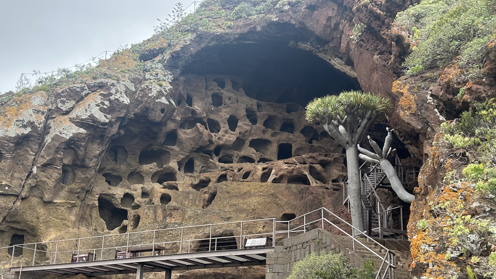

Entorno y localización
Dónde se encuentra
El Cenobio de Valerón se sitúa en Cuesta de Silva s/n, Santa María de Guía, Gran Canaria, en la zona norte de la isla. Su emplazamiento combina patrimonio, paisaje y valor histórico en un entorno de gran interés arqueológico y visual.
Referencia geográfica
Mapa de localización
En el siguiente mapa puedes ver la localización aproximada del yacimiento y orientarte mejor para planificar tu visita.
Ubicación aproximada del yacimiento arqueológico del Cenobio de Valerón, en Santa María de Guía, Gran Canaria.
Acceso por carretera
Cómo llegar en coche
El acceso en coche es una de las formas más cómodas de llegar al Cenobio de Valerón. Su localización en el norte de Gran Canaria permite llegar con facilidad desde municipios como Guía, Gáldar o Las Palmas de Gran Canaria.
La visita resulta especialmente atractiva por la relación entre el yacimiento y el paisaje en el que se integra, ofreciendo un recorrido que une patrimonio natural e historia.

Transporte público
Cómo llegar en guagua
Una referencia útil para acercarse a la zona norte es la línea 105 de Guaguas Global, que conecta Las Palmas de Gran Canaria con Guía y Gáldar.
Antes de la visita, es recomendable consultar los horarios actualizados, la frecuencia de paso y la parada más conveniente según el punto de salida, ya que las rutas pueden variar.
Un lugar bien conectado con la historia de la isla
La ubicación del Cenobio de Valerón permite comprender mejor la relación entre territorio, conservación y memoria histórica en uno de los espacios arqueológicos más importantes de Gran Canaria.
Volver arriba